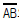
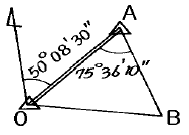
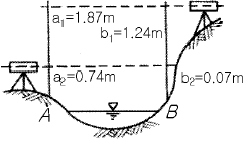
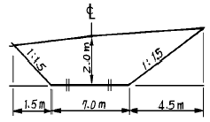
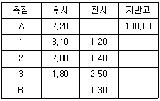

지적산업기사 (2004-03-07 기출문제)
1과목: 지적측량
1. 다음 그림과 같은 삼각형에서 측선

의 방위각 VAB 는? (단, VOA = 50° 08′30″, ∠OAB = 75° 36′10″)
- 75° 36′ 10″
- 125° 44′ 40″
- 129° 51′ 30″
- 154° 32′ 20″
(정답률: 알수없음)

2. 지적도근측량을 실시하여야 할 경우가 아닌 것은?
- 도시개발사업 등으로 지적확정측량을 하는 경우
- 축척변경을 위한 측량을 하는 경우
- 측량지역의 면적이 당해 지적도 1장에 해당하는 면적 이상인 경우
- 지적삼각측량을 실시하기 위한 경우
(정답률: 알수없음)
3. 오차중 그 원인이 불명하여 주의하여도 제거할 수 없는 것은?
- 착오
- 부정오차
- 정오차
- 추차
(정답률: 알수없음)
4. 지적도근점의 각도관측을 방위각법으로 실시할 때 1등도선의 폐색 오차의 제한은? (단, n은 폐색변을 포함한 변수임)
- ± √n 분 이내
- ± 1.5√n 분 이내
- ± 2√n 분 이내
- ± 2.5√n 분 이내
(정답률: 알수없음)
5. 지적도근측량에서 100m떨어진 지점을 관측할 때 각도에 2분의 오차가 발생하였다. 이 때 발생되는 거리오차는?
- 28㎜
- 38㎜
- 48㎜
- 58㎜
(정답률: 알수없음)
6. 축척 1/500 에서 지적도근측량시 도선의 총길이가 3318.55m일 때 2등도선인 경우 연결오차의 허용범위는?
- 0.29m 이내
- 0.34m 이내
- 0.43m 이내
- 0.92m 이내
(정답률: 60%)
7. 지적도 1/1,200 지역의 지적도근측량에서 A, B두점간의 거리가 88m, 방위각이 170° , A점의 좌표가 X=500m, Y=300m 이면 B점의 좌표는?
- X = 586.66m, Y = 315.28m
- X = 413.34m, Y = 315.28m
- X = -86.66m, Y = 15.28m
- X = 515.28m, Y = 213.34m
(정답률: 알수없음)
8. 다각망도선법에 의하여 지적도근측량을 실시하는 방법으로 옳은 것은?
- 개방도선식으로 망을 구성한다.
- 왕복도선식으로 망을 구성한다.
- 폐합도선방식으로 망을 구성한다.
- 결합다각방식으로 망을 구성한다.
(정답률: 알수없음)
9. 경계점을 설정하는 기준에 관한 설명으로 잘못된 것은?
- 고저차가 심한 곳은 그 토지의 하단부
- 절토된 도로에 있어서는 그 경사면의 상단부
- 공유수면매립지의 제방 등을 토지에 편입하여 등록하는 경우에는 바깥쪽 어깨부분
- 해면에 접한 토지는 평균 해수면
(정답률: 알수없음)
10. 교회법에 의한 측판측량시 시오삼각형이 생겼다면 내접원의 지름이 얼마일 때 그 중심점을 취하는가?
- 1㎜ 이하일 때
- 2㎜ 이하일 때
- 3㎜ 이하일 때
- 4㎜ 이하일 때
(정답률: 알수없음)
11. 지적도에 지적측량기준점을 제도하는 방법에 대한 다음 설명 중 잘못된 것은?
- 모든 지적측량기준점은 폭 0.2㎜의 선으로 제도한다.
- 지적도근점은 직경 2㎜의 원으로 제도한다.
- 2등 삼각점은 1㎜ 및 2㎜의 2중원으로 제도한다.
- 지적삼각점은 직경 3㎜ 원내에 + 표시를 하여 제도한다.
(정답률: 60%)
12. 측판측량방법에 의한 세부측량을 도선법으로 하는 경우에 대한 설명으로 알맞은 것은?
- 기초점만으로 상호 연결하여야 한다.
- 도선의 측선장은 도상 15㎝ 이하로 한다.
- 도선의 변수는 20변 이하로 한다.
- 도선의 폐색오차 공차는 √N/5이다. (N은 변의수)
(정답률: 알수없음)
13. 지적복구측량은 다음중 어느 것을 말하는가?
- 수해지역의 측량
- 축척변경측량
- 지적공부 멸실 지역의 측량
- 임야대장 등록지를 토지대장에 옮기는 측량
(정답률: 알수없음)
14. 분할지의 신구면적 오차배부시 적용되는 오차배부식은? (단, r:각 필지의 산출면적, F:원면적, A:측정면적 합계, a:각 필지의 측정면적)
- r =(F/A)× a
- r =-(F/a)× A
- r =(A/F)× a
- r =(A/a)× F
(정답률: 알수없음)
15. 측판측량지역의 측량준비도 작성시 검은색으로 제도하여야 할 사항은?
- 도곽신축량
- 보정계수
- 지적측량기준점
- 도곽선수치
(정답률: 알수없음)
16. 경위의측량으로 세부측량을 하는 경우의 기준으로 맞지 않는 것은?
- 거리측정단위는 1cm로 한다.
- 측량결과도는 당해 토지의 지적도와 동일한 축척으로 작성한다.
- 수평각 관측은 1대회의 방향관측법이나 2배각의 배각법에 의한다.
- 수평각의 측각공차로써 1회와 2회 측정각의 평균값에 대한 교차는 60초 이내이어야 한다.
(정답률: 알수없음)
17. 축척이 1/600인 지적도인 지역의 면적에 대한 설명으로 옳은 것은?
- 10m2 까지 등록
- 1m2 까지 등록
- 0.1m2 까지 등록
- 0.01m2 까지 등록
(정답률: 알수없음)
18. 분할에 따른 신구면적 오차의 허용범위를 계산함에 있어서 축척 1/3,000 지역은 그 축척을 얼마로 계산하는가?
- 1/2,400
- 1/3,000
- 1/5,000
- 1/6,000
(정답률: 알수없음)
19. 다음 중에서 지적측량을 시행하지 않아도 되는 것은?
- 지적공부에 새로이 등록할 토지가 생긴 때
- 지적도 또는 임야도의 축척을 변경할 때
- 지목을 변경하고자 할 때
- 지적측량의 성과를 소관청이 검사할 때
(정답률: 알수없음)
20. 농지의 구획정리시행지역을 경위의측량방법으로 시행할 때에 작성하는 측량결과도의 축척은?
- 1/500
- 1/600
- 1/1000
- 1/1200
(정답률: 알수없음)
2과목: 응용측량
21. 초점거리 200㎜인 촬영기로 지면으로부터 5,000m 고도에서 촬영한 사진의 축척은 얼마인가?
- 1/50,000
- 1/25,000
- 1/3,000
- 1/2,500
(정답률: 알수없음)
22. 그림과 같이 교호수준측량을 실시하여 B점의 표고를 구한 값은? (단, HA = 20m이다.)

- 19.34m
- 20.65m
- 20.67m
- 20.75m
(정답률: 알수없음)
23. 경사가 일정한 갱도에서 두점 AB간의 경사거리가 150m이고 고저차가 12m일 때 AB간의 수평거리는?
- 146.5m
- 147.5m
- 148.5m
- 149.5m
(정답률: 알수없음)
24. 부지 조성된 땅을 평판으로 분할 측량을 하려고 할 때 다음 중 가장 효율적인 방법은?
- 전진법
- 방사법
- 전방교회법
- 후방교회법
(정답률: 알수없음)
25. 화면크기가 18㎝× 18㎝인 항공사진의 주점기선장이 6.5㎝라면 인접사진과의 종중복은 몇 % 인가?
- 61 %
- 64 %
- 67 %
- 70 %
(정답률: 알수없음)
26. 비행고도가 2,100m이고 인접 중복사진의 사진 주점거리는 70mm일때 시차차 1.6mm인 건물의 높이는?
- 12m
- 48m
- 24m
- 72m
(정답률: 알수없음)
27. 다음 그림과 같은 단면의 면적은?

- 6.45m2
- 13.25m2
- 20.00m2
- 26.75m2
(정답률: 알수없음)
28. GPS 측량에서 사용되는 좌표계는 무엇인가?
- UTM 좌표계
- WGS84 좌표계
- TM좌표계
- WGS80 좌표계
(정답률: 알수없음)
29. 다음 사항 중 지형표시법이 아닌 것은?
- 점고법
- 음영법
- 등측법
- 등고선법
(정답률: 알수없음)
30. 원곡선에 있어서 교각(I)이 60° , 반지름(R)이 200m, B.C=N0.5+5m 일 때 곡선의 종점(E.C)의 기점에서의 추가거리는? (단, 말뚝의 중심선의 간격은 20m이다.)
- 214.4m
- 309.4m
- 209.4m
- 314.4m
(정답률: 알수없음)
31. 곡선반경(R)이 500m, 곡선의 단현길이(ℓ )가 20m일 때 이 단현에 대한 편각은 얼마인가?
- 1° 08′ 45″
- 1° 18′ 45″
- 2° 08′ 45″
- 78′ 45″
(정답률: 알수없음)
32. 수준측량시 전시, 후시를 함에 있어 표척의 위치를 같게하면 다음 중 어떠한 오차가 소거되는가?
- 표척의 눈금오차
- 표척의 전후 경사에 의한 오차
- 표척 침하에 의한 오차
- 표척의 좌우 경사 오차
(정답률: 알수없음)
33. 노선측량에 사용되는 곡선 중 주요 용도가 다른 것은?
- 클로소이드 곡선
- 2차 포물선
- 3차 포물선
- 렘니스케이트 곡선
(정답률: 알수없음)
34. 두 개의 원곡선이 1개의 접선에 대하여 서로 다른 방향(양쪽)에 중심을 가지는 연속된 수평곡선은?
- 완화곡선
- 단곡선
- 복심곡선
- 반향곡선
(정답률: 50%)
35. 간접수준측량에서 수평거리 5km일 때 지구 곡률오차는? (단, 지구의 곡률반경은 6,370km임)
- 0.962m
- 0.392m
- 0.785m
- 1.962m
(정답률: 알수없음)
36. 다음 항공사진의 기선고도비 중 과고감이 가장 큰 것은?
- 1.0
- 0.9
- 0.8
- 0.7
(정답률: 알수없음)
37. 다음의 수준측량 야장에서 B점의 지반고를 구하면?

- 109.20m
- 106.50m
- 102.70m
- 100.00m
(정답률: 알수없음)
38. 두 갱구의 좌표가 각각 A(4273.60, 2736.20), B(3564.50, 1683.20)이고 높이 차가 123.40 m 인 경우 이 갱도의 경사거리는? (단, 좌표의 단위는 m임)
- 1277.38m
- 1275.48m
- 1271.50m
- 1269.52m
(정답률: 알수없음)
39. GPS 측량에서 지적기준점 측량과 같이 높은 정밀도를 필요로 할 때 사용하는 관측방법은?
- 스태틱(static) 관측
- 키네마틱(kinematic) 관측
- 실시간 키네마틱(realtime kinematic) 관측
- 1점 측위관측
(정답률: 알수없음)
40. 완화곡선의 성질을 설명한 것중 옳지 않은 것은?
- 곡선반경은 완화곡선의 시점에서 무한대, 종점에서 원곡선의 반경(R)으로 된다.
- 완화곡선의 접선은 시점에서 원호에,종점에서 직선에 접한다.
- 완화곡선에 연한 곡선반경의 감소율은 캔트(cant)의 증가율과 동률로 된다.
- 종점에 있는 칸트는 원곡선의 칸트와 같게 된다.
(정답률: 알수없음)
3과목: 토지정보체계론
41. 우리나라 용도 지역제 중 상업지역의 분류에 속하지 않는 것은?
- 중심상업지역
- 일반상업지역
- 유통상업지역
- 준상업지역
(정답률: 알수없음)
42. 토지의 이용도가 높은 지역의 미관을 유지· 관리하기 위하여 지정한 지구는?
- 수변경관지구
- 중심지미관지구
- 일반미관지구
- 리모델링지구
(정답률: 알수없음)
43. Adickes법에 의해 도시 교외지(郊外地)시영역(市領域)의 대부분을 시(市)가 공유(公有)하는 토지 정책을 세웠던 나라는?
- 독일
- 미국
- 영국
- 프랑스
(정답률: 알수없음)
44. 유원지는 어떤 기반시설 분류에 해당하는가?
- 공간시설
- 보건위생시설
- 공공· 문화체육시설
- 방재시설
(정답률: 알수없음)
45. 도시기본계획의 특성이 아닌 것은?
- 고정성
- 미래지향성
- 종합계획성
- 창의성 및 포괄성
(정답률: 알수없음)
46. 다음중 도시의 특성이라고 보기 어려운 것은?
- 인구 밀도가 높다.
- 3차산업의 비중이 상대적으로 크다.
- 직업의 전문화와 분화
- 출산률이 높다.
(정답률: 알수없음)
47. 조사방법 중 전수조사의 단점이 아닌 것은?
- 조사원을 많이 필요로 하므로 조사원 교육에 어려움이 있다.
- 결과표를 작성하는데 많은 시간과 노력을 필요로 한다.
- 표본 오차를 수반하게 한다.
- 많은 경비를 필요로 한다.
(정답률: 알수없음)
48. 다음중 일반적으로 사용되는 도시의 인구 추정방법이 아닌 것은?
- 인구증가율(r)을 기본으로 하는 방법
- 최소 자승법에 의한 방법
- 최대 자승법에 의한 방법
- 시가화 가능면적과 표준인구밀도로 부터 계산하는 방법
(정답률: 알수없음)
49. 거대도시의 선착지(先着地)별 인구를 분석하면 다음 중 어느 사항의 유입인구(流入人口)가 가장 많은가?
- 원거리 유입인구
- 중거리 유입인구
- 근거리 유입인구
- 해외 유입인구
(정답률: 알수없음)
50. 도시개발을 시행하기 위해서는 소유권 등 사업지구내 이해관계인의 권리문제에 대한 해결이 이루어져야 한다. 이를 위한 사업방식에 속하지 않는 것은?
- 수복재개발방식
- 수용 또는 사용방식
- 환지방식
- 혼용방식
(정답률: 알수없음)
51. 인구주택총조사는 몇 년마다 실시하는가?
- 1년마다
- 5년마다
- 10년마다
- 15년마다
(정답률: 알수없음)
52. 다음중 분산주의와 관련이 없는 사항은?
- 하워드(Howard)
- 렛치워드(Letchworth)
- 웰윈(Welwyn)
- 꼬르뷰제(Le Corbusier)
(정답률: 알수없음)
53. 주택 1호당 200m2 규모로 하여 공공용지율이 30%인 1000호 주택단지를 건설하려고 한다. 필요한 토지면적은 얼마인가?
- 약 2.60 ha
- 약 2.86ha
- 약 26.0ha
- 약 28.6ha
(정답률: 알수없음)
54. 가도시화(pseudo-urbanization)현상을 유발하는 가장 중요한 요인은?
- 농촌의 압출력
- 도시의 흡인력
- 도시의 스프롤화
- 농촌의 도시화
(정답률: 알수없음)
55. 도시화 현상을 측정하는 도시적 요소와 거리가 먼 것은?
- 일필지 축척의 변화
- 산업구조의 변화
- 도시민의 성격변화
- 생활양식의 변화
(정답률: 알수없음)
56. 성 피터(St. Peter) 사원의 광장과 가장 관계가 밀접한 것은?
- 기념비 광장
- 전정 광장
- 시장 광장
- 교통 광장
(정답률: 알수없음)
57. 현재 인구가 200만인의 도시가 있다. 20년 후의 장래계획 인구는? (단, 인구증가율 r=3%이며, 등비급수에 의해 증가한다.)
- 250만인
- 280만인
- 300만인
- 360만인
(정답률: 알수없음)
58. 광역도시계획의 주요내용이 아닌 것은?
- 광역계획권의 교통체계
- 광역계획권의 기능분담
- 광역계획권의 환경보전
- 광역계획권의 지역, 지구지정
(정답률: 알수없음)
59. 도시의 내부적 공간구조 이론과 거리가 먼 것은?
- 동심원 이론
- 선형이론
- 선택이론
- 다핵심 이론
(정답률: 알수없음)
60. 도시개발사업시행을 위한 영향평가내용이 아닌 것은?
- 교통영향평가
- 환경영향평가
- 토지영향평가
- 인구영향평가
(정답률: 알수없음)
4과목: 지적학
61. 다음은 우리나라의 지적도의 축척이다. 가장 정밀도가 높은 것은?
- 1/600
- 1/1200
- 1/2400
- 1/500
(정답률: 70%)
62. 토지를 등록하는 지적공부를 크게 토지대장 등록지와 임야대장 등록지로 구분하고 있는 직접적인 원인은?
- 과세 세목별 구분
- 조사사업별 구분
- 필지 규모별 구분
- 도면 축척별 구분
(정답률: 알수없음)
63. 다음중 일필지의 정의와 관련이 적은 것은?
- 지형 지물에 의한 지리학적 등록 단위를 뜻한다.
- 하나의 지번을 붙이는 토지등록 단위를 뜻한다.
- 물권이 미치는 법적인 토지등록 단위를 뜻한다.
- 굴곡점을 직선으로 연결한 폐합 다각형을 뜻한다.
(정답률: 알수없음)
64. 토지이동시 토지의 지번, 지목, 면적 및 경계의 결정권자는?
- 행정자치부장관
- 등기소장
- 도지사
- 소관청
(정답률: 알수없음)
65. 물권 설정 측면에서 지적의 3요소로 볼 수 없는 것은?
- 토지
- 등록
- 공부
- 국가
(정답률: 알수없음)
66. 다음 설명중 틀린 것은?
- 공유지연명부는 지적공부에 포함되지 않는다.
- 지적공부에 등록하는 면적단위는 [m2]이다.
- 지적공부는 소관청의 영구보존 문서이다.
- 임야도의 축척에는 1/3000, 1/6000 두 가지가 있다.
(정답률: 알수없음)
67. 오늘날 지적측량의 방법과 절차에 대하여 엄격한 법률적인 규제를 가하는 이유로 가장 옳은 것은?
- 측량기술의 발전
- 토지등록정보 복원유지
- 법률적인 효력유지
- 기술적 변화 대처
(정답률: 알수없음)
68. 고려시대 지적에 관한 특별 업무를 관장하기 위해 설치된 기구가 아닌 것은?
- 찰리변위 도감
- 내두좌평
- 급전도감
- 정치도감
(정답률: 알수없음)
69. 우리나라 현행 토지대장의 특성이라고 할 수 없는 것은?
- 물권객체의 공시기능을 갖는다
- 인적편성주의를 채택하고 있다.
- 등록내용은 법률적 효력을 갖는다.
- 전산화일로도 등록· 처리한다.
(정답률: 알수없음)
70. 임야조사 사업시행에 따라 도지사가 사정한 경계 및 소유자에 대해 불복이 있을 경우에 사정내용을 번복하기 위해서는 어떤 처분이 필요했었는가?
- 임시토지조사 국장의 재사정
- 임야심사위원회의 재결
- 관할 고등법원의 확정판결
- 총독부 담당국장의 승인
(정답률: 알수없음)
71. 지적의 기본 이념이 아닌 것은?
- 형식주의
- 형식적심사주의
- 국정주의
- 공개주의
(정답률: 알수없음)
72. 지적측량의 특징으로서 맞지 않은 것은?
- 필지의 확정
- 기속적 측량
- 공사 시공 측량
- 사법적 측량
(정답률: 알수없음)
73. 다음 설명 중 옳지 않은 것은?
- 단식지번이란 본번만으로 구성된 지번을 말한다.
- 단식지번은 협소한 토지의 부번(附番)에 적합하다.
- 복식지번이란 본번에 부번을 붙여서 구성하는 지번을 말한다.
- 복식지번은 일반적인 신규등록지, 분할지에는 물론 단지단위법 등에 의한 부번에 적합하다.
(정답률: 알수없음)
74. 토지등록의 말소에 대한 설명 중 토지의 멸실에 의한 말소에 해당하는 것은?
- 등록전환에 의한 말소
- 토지합병에 의한 말소
- 등록요건변경에 따른 말소
- 해면성 말소
(정답률: 알수없음)
75. 지번의 진행방향에 따른 부번방식(附番方式)이 아닌것은?
- 사행식(蛇行式)
- 기우식(奇隅式)
- 절충식(折衷式)
- 우수식(隅數式)
(정답률: 알수없음)
76. 토지조사 당시에 토지에 관한 사정(査定)업무를 담당하였던 자는?
- 토지국장
- 임시토지조사국장
- 시장, 군수
- 도지사
(정답률: 알수없음)
77. 다음 중 지목을 체육용지로 할 수 없는 것은?
- 승마장
- 경륜장
- 스키장
- 경마장
(정답률: 알수없음)
78. 다음 중 우리나라에 적용되고 있는 지목의 구분방법은?
- 토지의 주된 사용목적에 따라 구분한다.
- 토지의 모양에 따라 구분한다.
- 토양의 성질에 따라 구분한다.
- 토지의 크기에 따라 구분한다.
(정답률: 알수없음)
79. 일반적인 지적의 내용중 틀린 것은?
- 토지의 크기
- 토지의 관리 상태
- 토지의 이용 상태
- 토지의 법률 상태
(정답률: 알수없음)
80. 다음 중 지적업무의 전산화 이유와 관련이 없는 것은?
- 민원처리의 신속화
- 국토 기본도의 정확한 작성
- 자료의 효율적 관리
- 토지 과세자료의 정확화
(정답률: 알수없음)
5과목: 지적관계
81. 다음 중 등기를 하여야 물권변동의 효력이 발생하는 것은?
- 채무변제로 인한 저당권 소멸
- 포괄 유증으로 인한 부동산 소유권의 취득
- 회사합병으로 인한 부동산 소유권의 취득
- 부동산 소유권의 시효취득
(정답률: 알수없음)
82. 도시개발을 수용 또는 사용방식으로 시행할 경우 시행자는 사업대상 토지면적의 얼마 이상을 매입해야 하는가?
- 1/3 이상
- 2/3 이상
- 3/4 이상
- 3/5 이상
(정답률: 알수없음)
83. 동일한 경계가 축척이 다른 도면에 각각 등록되어 있을 경우 경계의 최우선순위는?
- 평균하여 사용한다.
- 소관청이 임의로 결정한다.
- 대축척 경계에 따른다.
- 토지소유자 의견에 따른다.
(정답률: 알수없음)
84. 전국단위의 지적전산자료를 이용하고자 하는 자는 행정자치부 장관의 승인을 얻어야 한다. 이때, 행정자치부장관의 승인 이전에 행하는 심사로서 맞는 것은?
- 소관청의 심사
- 시· 도지사의 심사
- 중앙지적위원회의 심사
- 관계 중앙행정기관장의 심사
(정답률: 알수없음)
85. 1필지의 일부가 형질변경등으로 용도가 다르게 된 때 토지소유자는 몇일 이내에 소관청에 신청하여야 하는가?
- 10일내
- 20일내
- 30일내
- 60일내
(정답률: 알수없음)
86. 부동산 등기법에 따라 등기할 권리(權利)에 해당되지 아니하는 것은?
- 소유권
- 점유권
- 지역권
- 임차권
(정답률: 알수없음)
87. 지적법에서 정한 벌금 또는 과태료의 처분대상이 아닌 것은?
- 토지이동신청을 허위로 하였을때
- 측량및지형공간정보기사 자격 소지자가 지적측량을 하였을때
- 축척변경 시행에 따른 토지경계 표시의무를 게을리 하였을때
- 지적측량을 하기 위한 토지나 건물의 출입을 정당한 사유없이 거부하였을때
(정답률: 알수없음)
88. 도시개발구역을 지정할 경우 관보에 고시하여야 할 사항으로 틀린 것은?
- 도시개발구역의 명칭
- 도시개발구역의 지정 목적
- 도시개발사업의 시행기간 및 시행방법
- 도시개발구역 주변지역의 교통상황
(정답률: 알수없음)
89. 국토의계획및이용에관한법률에서 개발행위를 하고자 할 경우에 대한 설명으로 옳은 것은?
- 개발밀도관리구역안에서는 기반시설의 설치에 필요한 용지의 확보에 관한 계획서는 제출하지 아니한다.
- 경관· 조경등에 관한 계획서는 신청서에 첨부하지 아니한다.
- 환경오염방지에 관한 계획서를 첨부할 경우에는 개발 사업시행자에게 제출하여야 한다.
- 개발밀도관리구역안에서는 기반시설의 설치에 필요한 용지의 확보에 관한 계획서를 제출하여야 한다.
(정답률: 알수없음)
90. 소관청이 축척변경을 하고자 할 경우 신청서를 제출하여 승인을 얻어야 할 곳은?
- 시· 도지사
- 지방지적위원회
- 중앙지적위원회
- 행정자치부장관
(정답률: 알수없음)
91. 건축물이 있는 대지의 분할제한에 대한 설명으로 틀린것은?
- 주거지역에서는 60m2이상
- 상업지역에서는 150m2이상
- 공업지역에서는 150m2이상
- 녹지지역에서는 100m2이상
(정답률: 알수없음)
92. 소관청이 토지표시변경에 관하여 등기를 촉탁할 수 있는 원인행위가 아닌 것은?
- 신규등록
- 축척변경
- 등록사항의 직권정정
- 행정구역의 개편으로 인한 지번변경
(정답률: 알수없음)
93. 지적법의 목적에 관한 설명으로 가장 적당한 것은?
- 토지소유권의 확정
- 토지등록과 정리
- 삼각점의 설치
- 지형학적 위치결정
(정답률: 알수없음)
94. 지번부여원칙 중 진행방향에 따른 분류가 아닌 것은?
- 교호법
- 블럭(Block)식
- 사행법
- 지역단위법
(정답률: 알수없음)
95. 중앙 지적위원회의 심의 의결 사항이 아닌 것은?
- 축척변경 시행계획안에 관한 사항
- 지적 기술자의 징계
- 토지 등록 업무의 개선
- 지적측량적부심사 재심사
(정답률: 알수없음)
96. 국토의계획및이용에관한법률에 의한 용도지역 중 관리지역에 해당되는 것은?
- 보전관리지역
- 상업관리지역
- 공업관리지역
- 녹지관리지역
(정답률: 알수없음)
97. 1필지의 획정에 있어서 주된토지에 양입할 수 있는 대상은?
- 구거
- 대
- 주된 토지면적의 10%를 초과하는 종된 토지
- 종된 토지의 면적이 330m2를 초과하는 경우
(정답률: 알수없음)
98. 소관청에 비치하는 대지권 등록부에 등록할 사항으로 잘못된 것은?
- 토지의 소재
- 지분
- 지번
- 대지권의 비율
(정답률: 36%)
99. 토지소유자가 아닌자가 토지이동에 대하여 신청을 대위(代位)할 수 없는 자는?
- 국가가 매입하여 취득한 토지를 관리하는 국가기관
- 민법 제 404조의 규정에 의한 채권자
- 공장용지나 잡종지의 지목으로 된 토지의 그 사업시행자
- 주택건설촉진법에 의한 공동주택의 부지는 그 관리인
(정답률: 알수없음)
100. 국토의계획및이용에관한법률상 용도지역의 지정에 관한 설명으로 틀린 것은?
- 주거지역 : 거주의 안녕과 건전한 생활환경의 보호를 위하여 필요한 지역
- 상업지역 : 상업과 업무의 편익증진을 위하여 필요한 지역
- 공업지역 : 공업의 편익증진을 위하여 필요한 지역
- 경관지역 : 경관을 보호 형성하기 위하여 필요한 지역
(정답률: 40%)
이제 VAB를 구하기 위해, 우선 삼각형 VABO에서 각 VAB와 각 VOB의 합은 180°이므로, ∠VABO = 180° - ∠VOA = 129° 51′ 30″입니다.
또한, 삼각형 VABA에서 각 VAB와 각 VAA의 합은 180°이므로, ∠VABA = 180° - ∠OAB = 104° 23′ 50″입니다.
따라서, VAB = ∠VABO - ∠VAAB = 129° 51′ 30″ - 104° 23′ 50″ = 25° 27′ 40″입니다.
하지만 문제에서는 방위각을 구하라고 했으므로, 이 값을 360°에서 빼줘야 합니다. 따라서, 360° - 25° 27′ 40″ = 334° 32′ 20″입니다.
하지만 보기에서는 각도를 도, 분, 초로 표시하고 있으므로, 이 값을 각도로 변환해줘야 합니다. 따라서, 334° 32′ 20″ = 360° - 25° 27′ 40″ = 154° 32′ 20″이 됩니다.
따라서, 정답은 "154° 32′ 20″"입니다.